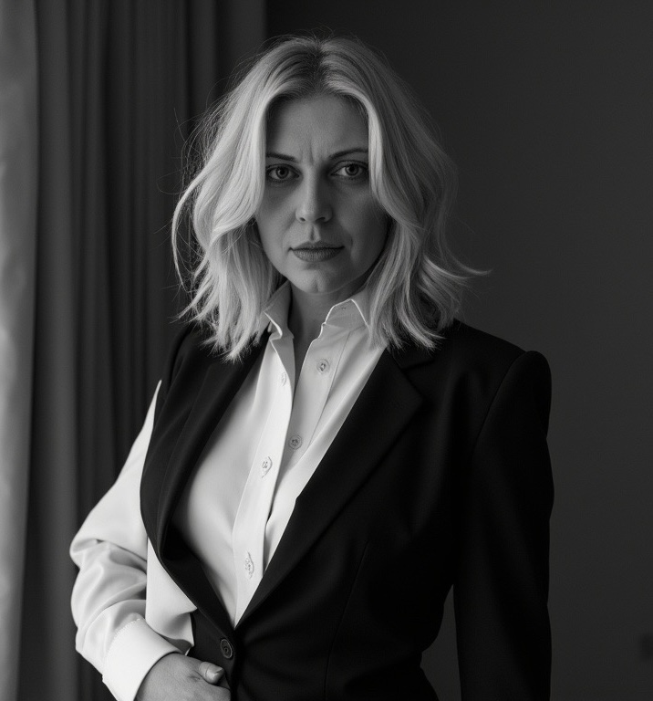

K+F+I projektmenedzser és kutató vagyok. Azt keresem, ahol egy KKV ötlete találkozhat egy egyetemi kutatással — vagy hol nyílhat együttműködés egy multinacionális vállalat felé. Ezeket a kapcsolódásokat keresem és építem.
A Törökbálinti Kísérleti Gimnázium nyolcosztályos képzésében nőttem fel, ahol Zsolnai-módszerrel tanultunk. Partnerek voltunk, nem diákok — kíváncsiak voltak az ötleteinkre, és olyan tárgyakat tanultunk, mint etika, logika vagy tudománytan.
„Itt értettem meg először, hogy a világ összefüggésrendszer, és hogy a fontos kérdés nem az, mit tudsz fejből, hanem az, hogyan találsz választ a problémákra."
Ez a szemlélet azóta is meghatározza a munkámat.
Tanulmányaim során a közgazdaságtan, a marketing, a szervezetfejlesztés és a pályaorientáció területei felé fordultam. A Budapesti Gazdasági Egyetemen kezdtem, később belekóstoltam a Corvinus világába, majd a MATE emberi erőforrás tanácsadó mesterképzésén mélyítettem a szervezetfejlesztési tudásomat, azt követően a BME GTK marketing mesterszakán végeztem.
Fontos számomra, hogy a tudásom folyamatosan együtt fejlődjön a világgal.
Szállodák, irodaházak és egyetemi beruházások komplex beszállításait koordináltam — a bútoroktól és burkolatoktól a szanitereken át a homlokzati elemekig. Itt tanultam meg, hogyan kell egy projektet valóban átlátni: összehangolni beruházókat, üzemeltetőket, gyártókat és szakági szereplőket úgy, hogy a végén minden a helyére kerüljön.
A munkám középpontjában az áll, hogyan válik egy ötletből életképes termék vagy szolgáltatás — a pénzügyi modelltől és a jogi struktúrától kezdve a piaci pozicionáláson és a marketingen át egészen a finanszírozásig és a befektetői tárgyalásokig.
Az ICMM-modell kidolgozása és empirikus validálása 60 magyar K+F-aktív vállalat felmérésével. R² = 0,632.
Hiszek abban, hogy a legjobb eredmények együttműködésből születnek. Nálam jobb marketingesek, pénzügyi szakemberek vagy szervezetfejlesztők sokan vannak — ezért szeretek a saját területük kiváló szakértőivel dolgozni.
Amit én hozzáteszek, az a nagy kép: azok az összefüggések és kapcsolódási pontok, amelyek a részletekből sokszor nem látszanak. Hogy egy KKV ötlete hogyan találkozhat egy egyetemi kutatással, vagy hol nyílhat együttműködés egy multinacionális vállalat felé.
„Ezeket a kapcsolódásokat keresem és építem."
Deep-tech / Kibervédelem
Biotechnológia & orvostechnológia
Energetika / megújulók
Agrárinnováció
IT / szoftverfejlesztés
Mérnöki szolgáltatások